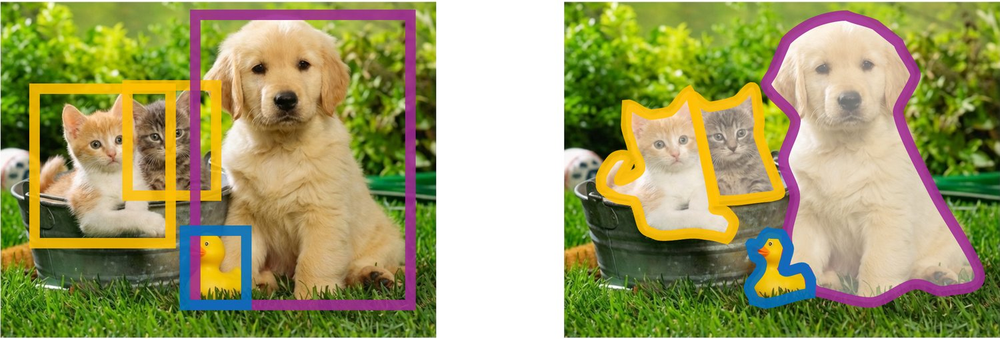
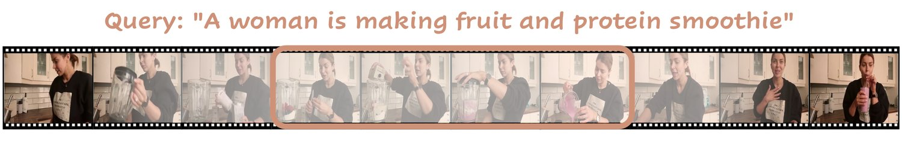
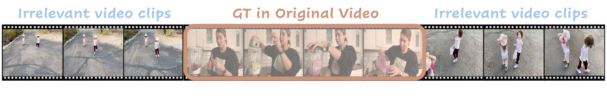
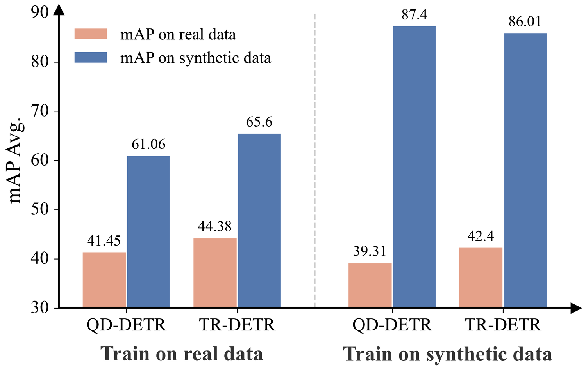
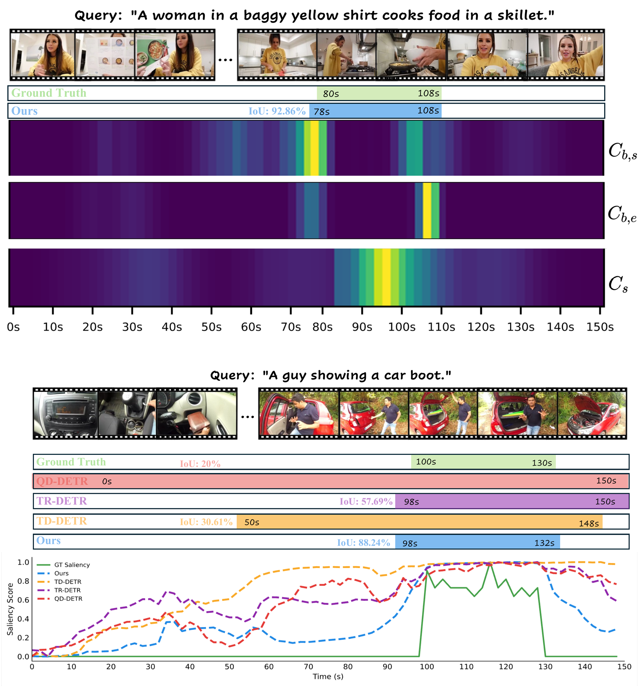
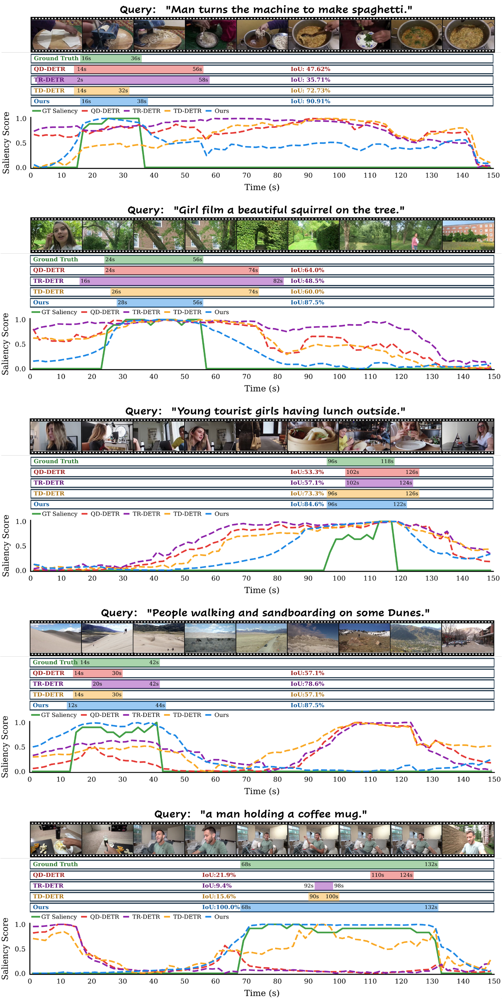
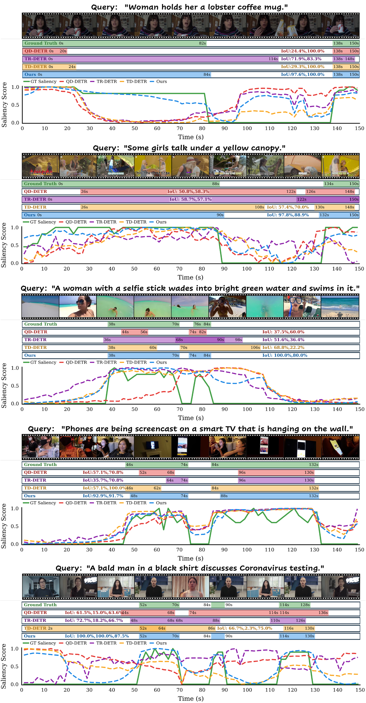

How to use: click a GT, a predicted moment or a top-5 saliency frame to play it — playback stops automatically at the segment end.
Video temporal grounding (VTG) aims to localize relevant moments and predict saliency scores in untrimmed videos based on natural language queries. Recently, DETR-inspired methods have achieved instance-level moment predictions through query-based semantic evidence aggregation. However, unlike spatial objects with clear physical edges, video moments often exhibit ambiguous temporal boundaries due to the semantic gradient. Consequently, relying solely on global semantics can lead to severe boundary misalignment, yielding sub-optimal grounding results.
To address this issue, we propose a novel Dual Evidence Detection Transformer (DE²TR) framework for better boundary localization. In particular, we introduce a dual-branch decoder that simultaneously captures global semantic evidence and fine-grained boundary cues. To prevent feature conflict between these distinct objectives, we channel-wise decouple the moment queries, facilitating independent evidence learning under the supervision of evidence alignment losses. Building upon this dual-branch design, we introduce a prior-guided refinement mechanism that employs explicit prior maps to steer queries toward potential regions of interest. Furthermore, a boundary augmentation strategy synthesizes ideal boundary patterns via simple temporal splicing, effectively enhancing the model’s boundary awareness. Extensive experiments on multiple popular benchmarks demonstrate that DE²TR significantly outperforms state-of-the-art approaches.
Objects in images have clear physical edges — detectors can localize them from appearance alone. Video moments, in contrast, exhibit a semantic gradient: the relevant content fades in and out gradually, so global semantics alone cannot tell where a moment starts or ends. DETR-style grounding aggregates only global semantic evidence, causing severe boundary misalignment. We verify this with a diagnostic experiment: splicing the ground-truth moments into irrelevant background clips creates synthetic videos with hard boundaries — once the boundary signal is clear, +21.2 mAP is recovered for TR-DETR (QD-DETR: +19.6). Yet models trained on synthetic data remain at baseline level on real videos: more data does not help, the boundary signal does.

(a) Objects in image — clear physical edges ✓

(b) Real moment in video — semantic gradient, ambiguous boundaries ✗

(c) Synthetic video — GT spliced into irrelevant clips, hard boundaries

(d) Diagnostic experiments with QD-DETR and TR-DETR: clear boundary priors unlock the performance, while synthetic-trained models stay at baseline level on real data.
SlowFast + CLIP backbones. Bold: best · underline: second · †: audio modality · ‡: data augmentation.
| Method | test | val | ||||||||||||
|---|---|---|---|---|---|---|---|---|---|---|---|---|---|---|
| MR | HD | MR | HD | |||||||||||
| R1 | mAP | ≥ Very Good | R1 | mAP | ≥ Very Good | |||||||||
| @0.5 | @0.7 | @0.5 | @0.75 | Avg. | mAP | HIT@1 | @0.5 | @0.7 | @0.5 | @0.75 | Avg. | mAP | HIT@1 | |
| M-DETR NeurIPS'21 | 52.89 | 33.02 | 54.82 | 29.40 | 30.73 | 35.69 | 55.60 | 53.94 | 34.84 | – | – | 32.20 | 35.65 | 55.55 |
| UMT† CVPR'22 | 56.23 | 41.18 | 53.83 | 37.01 | 36.12 | 38.18 | 59.99 | 60.26 | 44.26 | 56.70 | 39.90 | 38.59 | 39.85 | 64.19 |
| QD-DETR CVPR'23 | 62.40 | 44.98 | 62.52 | 39.88 | 39.86 | 38.94 | 62.40 | 62.68 | 46.66 | 62.23 | 41.82 | 41.22 | 39.13 | 63.03 |
| MomentDiff NeurIPS'23 | 57.42 | 39.66 | 54.02 | 35.73 | 35.95 | – | – | – | – | – | – | – | – | – |
| UniVTG ICCV'23 | 58.86 | 40.86 | 57.60 | 35.59 | 35.47 | 38.20 | 60.96 | – | – | – | – | 36.13 | 38.83 | – |
| CG-DETR arXiv'23 | 65.40 | 48.40 | 64.50 | 42.80 | 42.90 | 40.30 | 66.20 | 67.40 | 52.10 | 65.60 | 45.70 | 44.90 | 40.80 | 66.70 |
| TR-DETR AAAI'24 | 64.66 | 48.96 | 63.98 | 43.73 | 42.62 | 39.91 | 63.42 | 67.10 | 51.48 | 66.27 | 46.42 | 45.09 | 40.55 | 64.77 |
| UVCOM CVPR'24 | 63.55 | 47.47 | 63.37 | 42.67 | 43.18 | 39.74 | 64.20 | 65.10 | 51.81 | – | – | 45.79 | 40.03 | 63.29 |
| BAM-DETR ECCV'24 | 62.71 | 48.64 | 64.57 | 46.33 | 45.36 | – | – | 65.10 | 51.61 | 65.41 | 48.56 | 47.61 | – | – |
| TD-DETR‡ ICCV'25 | 64.53 | 50.37 | 66.21 | 47.32 | 46.69 | – | – | 65.88 | 53.67 | 66.43 | 49.86 | 49.05 | – | – |
| KDA ICCV'25 | 66.70 | 50.88 | 67.57 | 46.31 | 45.67 | – | – | 69.11 | 53.46 | 68.17 | 48.04 | 47.41 | – | – |
| MS-DETR ACMMM'25 | 64.72 | 48.77 | 66.41 | 44.91 | 44.89 | 40.45 | 65.95 | 66.90 | 51.68 | 67.19 | 46.05 | 46.00 | 40.57 | 66.58 |
| DE2TR | 67.24 | 51.39 | 67.92 | 49.83 | 48.74 | 41.08 | 66.34 | 68.13 | 53.81 | 68.89 | 51.61 | 50.67 | 40.93 | 66.65 |
| DE2TR‡ | 67.98 | 52.46 | 68.36 | 51.24 | 49.87 | 40.51 | 66.75 | 69.81 | 55.29 | 70.52 | 53.43 | 52.12 | 41.20 | 66.97 |
vs. previous best (TD-DETR): +2.05 Avg mAP on test; with BAS, gains widen to +3.18 Avg mAP, +2.09 R1@0.7 and +3.92 mAP@0.75.
| Method | Charades-STA | TACoS | ||||||
|---|---|---|---|---|---|---|---|---|
| R1@0.3 | R1@0.5 | R1@0.7 | mIoU | R1@0.3 | R1@0.5 | R1@0.7 | mIoU | |
| M-DETR NeurIPS'21 | 65.83 | 52.07 | 30.59 | 45.54 | 37.97 | 24.67 | 11.97 | 25.49 |
| QD-DETR CVPR'23 | – | 57.31 | 32.55 | – | – | – | – | – |
| MomentDiff NeurIPS'23 | – | 55.57 | 32.42 | – | 44.78 | 33.68 | – | – |
| UniVTG ICCV'23 | 70.81 | 58.01 | 35.65 | 50.10 | 51.44 | 34.97 | 17.35 | 33.60 |
| UVCOM CVPR'24 | – | 59.25 | 36.64 | – | – | 36.39 | 23.32 | – |
| LLMEPET ACMMM'24 | 70.91 | – | 36.49 | 50.25 | 52.73 | – | 22.78 | 36.55 |
| DualGround NeurIPS'25 | – | 61.11 | 38.52 | – | – | – | – | – |
| MS-DETR ACMMM'25 | 71.34 | 59.62 | 36.48 | 50.59 | 53.16 | 39.65 | 23.42 | 37.01 |
| FlashVTG WACV'25 | – | 60.11 | 38.01 | – | 53.71 | 41.76 | 24.74 | 37.61 |
| KDA ICCV'25 | – | 60.23 | 37.63 | – | – | 40.13 | 24.34 | – |
| DE2TR | 72.31 | 60.39 | 39.87 | 51.58 | 56.29 | 42.52 | 27.14 | 39.76 |
At strict IoU thresholds: +1.35 R1@0.7 on Charades-STA and +2.40 R1@0.7 on TACoS.
| Method | VT | VU | GA | MS | PK | PR | FM | BK | BT | DS | Avg. |
|---|---|---|---|---|---|---|---|---|---|---|---|
| TCG ICCV'21 | 85.0 | 71.4 | 81.9 | 78.6 | 80.2 | 75.5 | 71.6 | 77.3 | 78.6 | 68.1 | 76.8 |
| UMT CVPR'22 | 87.5 | 81.5 | 88.2 | 78.8 | 81.4 | 87.0 | 76.0 | 86.9 | 84.4 | 79.6 | 83.1 |
| QD-DETR CVPR'23 | 88.2 | 87.4 | 85.6 | 85.0 | 85.8 | 86.9 | 76.4 | 91.3 | 89.2 | 73.7 | 85.0 |
| UniVTG ICCV'23 | 83.9 | 85.1 | 89.0 | 80.1 | 84.6 | 81.4 | 70.9 | 91.7 | 73.5 | 69.3 | 81.0 |
| TR-DETR AAAI'24 | 89.3 | 93.0 | 94.3 | 85.1 | 88.0 | 88.6 | 80.4 | 91.3 | 89.5 | 81.6 | 88.1 |
| UVCOM CVPR'24 | 87.6 | 91.6 | 91.4 | 86.7 | 86.9 | 86.9 | 76.9 | 92.3 | 87.4 | 75.6 | 86.3 |
| R2-Tuning ECCV'24 | 85.0 | 85.9 | 91.0 | 81.7 | 88.8 | 87.4 | 78.1 | 89.2 | 90.3 | 74.7 | 85.2 |
| MS-DETR ACMMM'25 | 89.8 | 93.3 | 94.8 | 88.7 | 88.5 | 89.0 | 80.5 | 94.0 | 88.7 | 76.9 | 88.4 |
| MQVTG ICCV'25 | 87.7 | 91.6 | 92.3 | 85.2 | 85.7 | 91.3 | 78.5 | 96.5 | 90.6 | 82.9 | 88.2 |
| DE2TR | 91.7 | 94.1 | 95.4 | 88.9 | 89.5 | 90.4 | 81.2 | 92.3 | 91.6 | 80.9 | 89.6 |
Best on 7 / 10 categories · +1.20 Avg over the previous best.
| DEF | ℒbea | ℒsea | Ps | Pb | BAS | R1 | mAP | |
|---|---|---|---|---|---|---|---|---|
| @0.5 | @0.7 | Avg. | ||||||
| 65.68 | 49.87 | 45.63 | ||||||
| ✓ | 65.23 | 50.52 | 46.30 | |||||
| ✓ | ✓ | 66.71 | 50.97 | 48.08 | ||||
| ✓ | ✓ | 67.03 | 49.35 | 47.69 | ||||
| ✓ | ✓ | ✓ | 66.84 | 52.13 | 49.24 | |||
| ✓ | ✓ | ✓ | ✓ | 67.42 | 52.39 | 49.74 | ||
| ✓ | ✓ | ✓ | ✓ | 66.77 | 52.71 | 49.69 | ||
| ✓ | ✓ | ✓ | ✓ | ✓ | 68.13 | 53.81 | 50.67 | |
| ✓ | ✓ | ✓ | ✓ | ✓ | ✓ | 69.81 | 55.29 | 52.12 |
| Method | Backbone | R1 | mAP | |
|---|---|---|---|---|
| @0.5 | @0.7 | Avg. | ||
| TD-DETR ICCV'25 | SF+C | 65.88 | 53.67 | 49.05 |
| DE2TR | SF+C | 68.13 | 53.81 | 50.67 |
| TD-DETR ICCV'25 | IV2 | 71.19 | 55.81 | 51.72 |
| DE2TR | IV2 | 71.84 | 57.68 | 53.91 |
Backbone-agnostic: SOTA with SlowFast+CLIP and InternVideo2 (IV2).
| Method | R1 | mAP | |
|---|---|---|---|
| @0.5 | @0.7 | Avg. | |
| Merged | 66.71 | 52.90 | 49.53 |
| Separate | 68.13 | 53.81 | 50.67 |
Routing decoupled queries to their own heads keeps task–feature alignment strict.
| Sem. | Bnd. | R1 | mAP | |
|---|---|---|---|---|
| Branch | Branch | @0.5 | @0.7 | Avg. |
| memory | memory | 67.74 | 52.97 | 50.14 |
| query | query | 68.97 | 53.34 | 50.32 |
| memory | query | 67.51 | 52.05 | 49.86 |
| query | memory | 68.13 | 53.81 | 50.67 |
Semantic → query (global intent) · boundary → memory (local cues) works best.
| N | R1 | mAP | |
|---|---|---|---|
| @0.5 | @0.7 | Avg. | |
| 5 | 67.68 | 53.48 | 48.56 |
| 10 | 68.13 | 53.81 | 50.67 |
| 15 | 68.52 | 53.35 | 51.22 |
| 20 | 69.35 | 54.00 | 51.19 |
Performance saturates as N grows; N = 10 kept for fair comparison.
Subsets of QVHighlights val filtered by the ambiguity coefficient δk — top 20% (Extreme), 50% (Hard), 80% (Moderate) most ambiguous samples. Competitors reproduced from official codes.
| Method | Extreme (20%) | Hard (50%) | Moderate (80%) | All (100%) | ||||||||
|---|---|---|---|---|---|---|---|---|---|---|---|---|
| R1@0.5 | R1@0.7 | mAP | R1@0.5 | R1@0.7 | mAP | R1@0.5 | R1@0.7 | mAP | R1@0.5 | R1@0.7 | mAP | |
| QD-DETR CVPR'23 | 56.13 | 39.03 | 34.80 | 58.71 | 40.52 | 35.48 | 62.74 | 45.08 | 39.52 | 63.87 | 47.74 | 42.45 |
| TR-DETR AAAI'24 | 51.29 | 33.55 | 32.24 | 56.57 | 40.77 | 35.82 | 62.90 | 47.50 | 40.90 | 65.16 | 50.39 | 44.38 |
| BAM-DETR ECCV'24 | 51.94 | 38.71 | 38.10 | 56.90 | 42.19 | 39.98 | 62.58 | 47.90 | 44.83 | 63.68 | 51.37 | 47.84 |
| TD-DETR ICCV'25 | 54.52 | 40.65 | 38.82 | 58.19 | 43.61 | 39.94 | 63.71 | 49.03 | 44.92 | 65.74 | 52.97 | 48.83 |
| Ours | 60.00 | 41.32 | 40.40 | 62.06 | 45.68 | 42.64 | 67.26 | 51.69 | 48.09 | 68.13 | 53.81 | 50.67 |
| Ours w/ BAS | 61.61 | 42.13 | 41.25 | 63.48 | 47.26 | 43.79 | 68.31 | 52.74 | 49.02 | 69.81 | 55.29 | 52.12 |
SOTA on every ambiguity level — DE2TR mitigates inherent boundary ambiguity rather than overfitting to sharp transitions.
The semantic query Cs attends to the whole moment, while the boundary queries Cb,s, Cb,e spike exactly at the edges. Compared with recent advanced methods, DE²TR keeps semantic alignment while localizing sharp, well-aligned boundaries. More qualitative results on the QVHighlights val split are included from the supplementary material.



Click any image to view it full-size.
@inproceedings{zhang2026de2tr,
title = {{DE$^2$TR}: Dual Evidence Detection Transformer for Video Temporal Grounding},
author = {Zhang, Yifan and Liu, Chengxu and Dun, Yujie and Qian, Xueming},
booktitle = {European Conference on Computer Vision (ECCV)},
year = {2026}
}